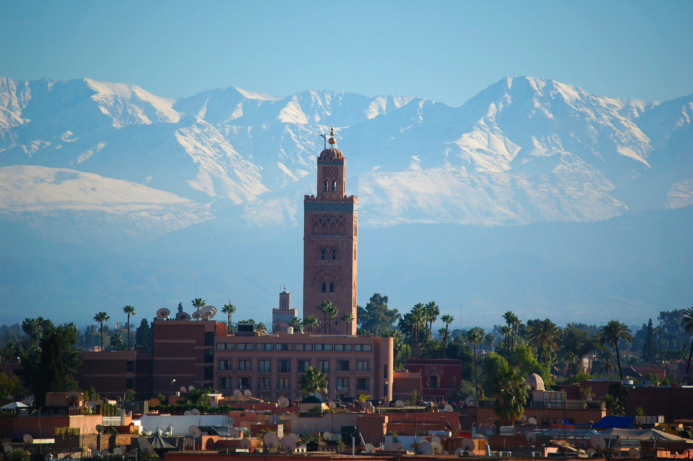

Morocco Offsite Guide: Marrakech, Agafay and Taghazout
How to plan a company offsite in Morocco: riads in Marrakech, desert camps in Agafay and surf in Taghazout, with seasons, logistics and budget tips.

A short flight from many European cities, Morocco feels like another world: riads hidden behind old doors, a stone desert under the stars, the Atlas mountains on the horizon and a surf coast in the south. For a team that wants a truly memorable retreat without long-haul flights, it is hard to beat.
Marrakech: riads, gardens and the medina
Marrakech works brilliantly for groups. Book a riad or a boutique hotel exclusively, run workshops in a courtyard by the fountain, then explore the souks with a local guide in the afternoon.
- Best for: groups of 10 to 100, incentive trips, client events.
- Ideas: a Moroccan cooking class, a medina treasure hunt, a visit to the Majorelle garden, a hammam afternoon.
Discover Marrakech for retreats.

The Agafay desert: nights under the stars
Forty minutes from Marrakech, the Agafay is a rocky desert with luxury camps. Teams love the contrast: a day of workshops in the city, then sunset in the desert, a fire, live music and a sky full of stars.
- Best for: one or two unforgettable nights within a Marrakech programme.
- Ideas: quad or camel rides, a sunset dinner, stargazing.
Taghazout: surf and sunshine
On the Atlantic coast near Agadir, Taghazout is a relaxed surf village with sun almost all year. Surf lessons in the morning, workshops in the afternoon, sunsets on the rooftop.
- Best for: startups, remote teams, winter retreats.
Discover Taghazout · Surf retreats for teams.
When to go
- Marrakech and Agafay: March to May, late September to November. Summers are very hot; winter nights are cold in the desert.
- Taghazout: all year, with mild winters.
Practical points
- Entry: Morocco is outside the Schengen area. Many European nationalities enter visa-free for short stays, but check the rules for every nationality in your team early.
- Flights: direct flights to Marrakech and Agadir from many European cities. We book every participant's flight and coordinate arrivals.
- Culture: dress modestly in the medina; venues adapt menus for every diet.
Budget
For three nights with flights, plan roughly €1,100 to €2,200 per person. A desert night adds cost but is usually the highlight of the trip. Check with our budget calculator.
Plan it with us
Talk to our expert and we'll design a Moroccan retreat around your goals, with tailored proposals and flights included. Looking for a reward trip? Read our incentive trip ideas.
Frequently asked questions
Is Morocco good for a company retreat?
Yes. It is a short flight from Europe, offers great value, and combines city, desert and coast experiences that teams remember for years.
How long is the flight to Marrakech from Europe?
From most western European cities, flights take about two to four hours.
When is the best time for a team trip to Marrakech?
Spring (March to May) and autumn (late September to November), when days are warm and evenings are pleasant.
Let's plan your team's next retreat
Venue, programme, activities and every participant's flight, handled by one team. It starts with a call with our expert.
Keep reading
All articles
The Best Company Retreat Destinations in Europe
The best destinations in Europe for a company retreat or offsite, by type of team and budget: sun, surf, culture, nature and great value, with flight tips.

Incentive Trip Ideas: How to Reward Your Top Performers
Incentive trip ideas that people remember: destinations, experiences, surprises and how to structure a reward trip for 10 to 100 top performers.

Surf Retreats for Teams: Ericeira, Taghazout and Beyond
Why surf retreats work so well for teams, the best surf destinations for company offsites, how to mix lessons with workshops, and what beginners should know.